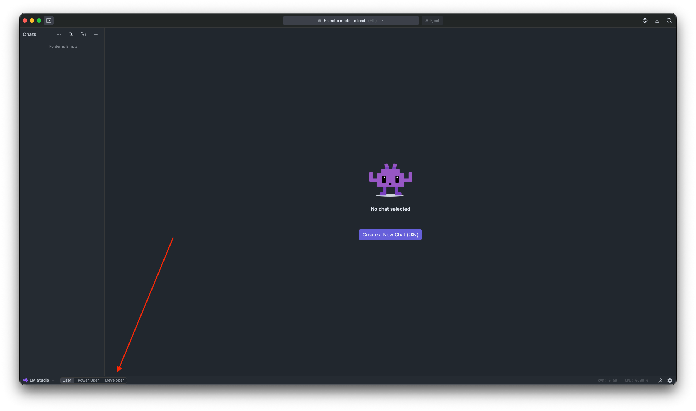
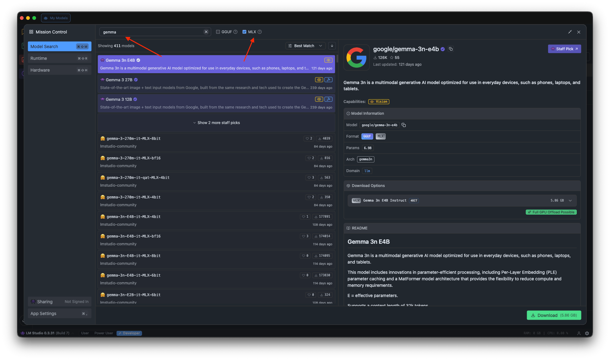
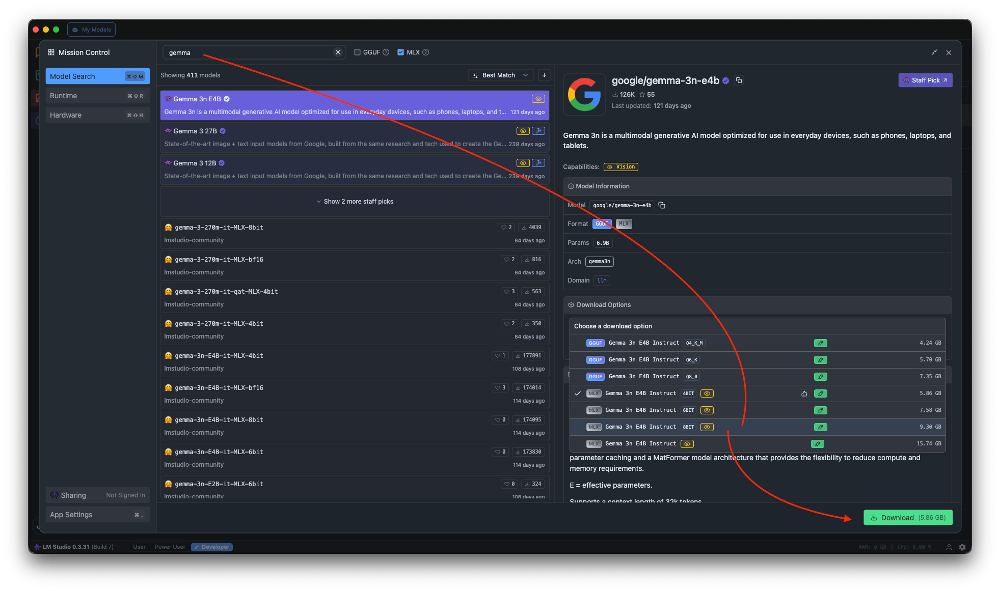
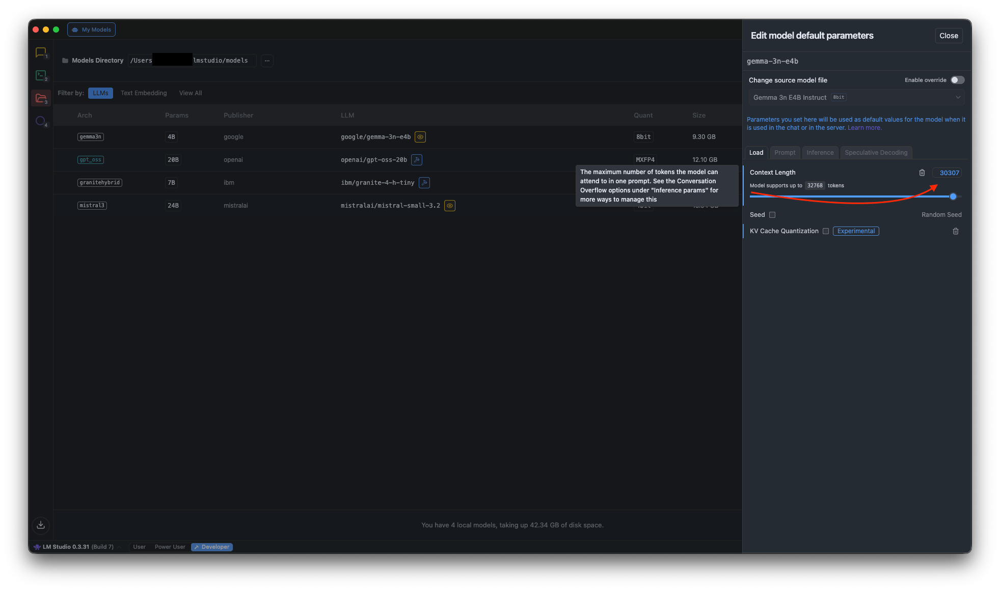
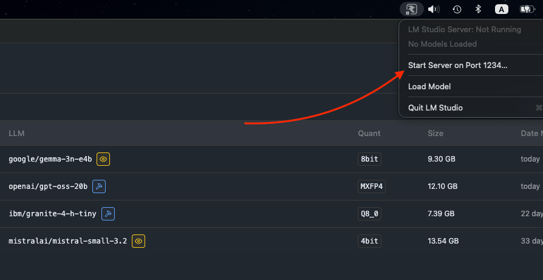
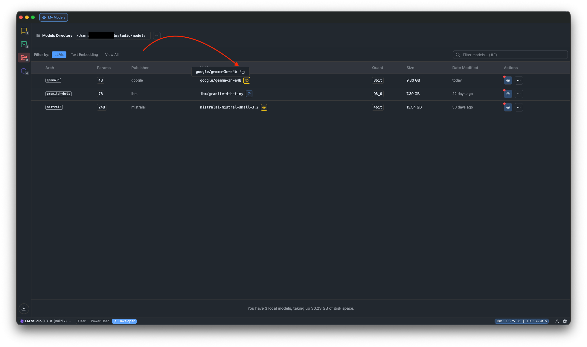

Handbook · AI and processing
Local AI with LM Studio
Run a free, private model on your Mac and connect InfoBubble to it.
LM Studio is a free app that downloads and runs language models and exposes them as an OpenAI-compatible server. You need an Apple Silicon Mac; 16 GB of RAM is the minimum, 32 GB is better.
1. Download a model
- In LM Studio switch to Developer mode at the bottom of the window.

LM Studio: switch to Developer mode - Open Discover and search for a model. On a Mac prefer MLX builds. For criteria checks pick a
fast instruction model without reasoning; for summaries a larger one is worth it.

LM Studio: find a model by name, MLX type - Pick a size that fits your RAM (4-bit quantization is a good balance) and press Download.

LM Studio: choose a variant that fits your Mac
2. Load it with a large context
Load the model and raise Context Length as far as your Mac allows, e.g. 32768.
InfoBubble uses up to 30,000 tokens per request.

3. Start the server
Open the server tab, make sure the model is loaded and press Start Server. Copy the server address
(usually http://127.0.0.1:1234) and the model identifier.


4. Connect InfoBubble
- Settings → AI → Manage… → Add Provider, type OpenAI Compatible.
- API URL: the server address as LM Studio shows it, e.g.
http://127.0.0.1:1234(with or without/v1, both work). API Key: leave empty. Model Name: the identifier. Context Window: the same length you set in LM Studio. - Press Test Connection, then Save.
- Back in the AI tab, choose the new provider for Criteria & Tags and/or Summaries & Chat.

LM Studio must keep running while InfoBubble works. If requests time out, lower Parallel AI Requests in Settings → AI.
Questions or problems? Open an issue in the
GitHub repository.